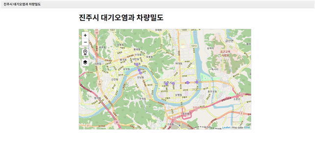
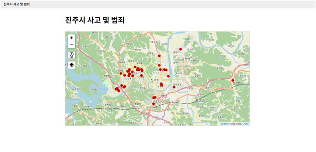

교통 데이터 거래소 시각화

포항시 버스 정류장 이용량 시각화
- 개발 기간 : 2020.09 ~ 2020.12
- 개발 도구 : IRIS Studio
- 개발 인원 : 1명
- 주제 : 포항시 교통카드 사용 내역 기반 버스 정류장 이용량 시각화
-
목적
- 자주 이용되는 버스 정류장 파악으로 노선 재배치 및 정류장 증설
- 시간대별 승·하차 승객을 각각 파악하여 버스 배차간격 조절
-
시각화 방법
- 교통 데이터 거래소 - '포항시 버스 사용자 교통카드 사용 내역' 데이터 자료 활용
- 정류장별 승·하차 데이터를 집계한 후, 정류장 위도와 경도 데이터를 사용하여 지도 API에 원으로 표시
- 승·하차 승객에 비례하여 원의 크기 증가
- 승·하차 시간 데이터를 분석하여 시간대별 승·하차 정보 제공
- 승차 정류장은 빨간색, 하차 정류장은 보라색으로 표시

진주시 대기오염과 차량밀도의 상관 관계 시각화
- 개발 기간 : 2020.09 ~ 2020.12
- 개발 도구 : IRIS Studio
- 개발 인원 : 1명
- 목적 : 진주시의 차량밀도가 대기오염에 끼치는 영향 여부 파악
-
시각화 방법
- '진주시 SOC 대기오염' 데이터셋에 있는 대기 오염물질을 집계한 후, 지도 API에 원으로 표시
- 대기 오염물질에 비례하여 원의 크기 증가
- 지도 API 위에 별도의 레이어를 추가하여 '진주시 CCTV 차량밀도' 데이터셋에 있는 차량밀도 데이터를 이용해 원으로 표시
- 대기 오염물질은 빨간색, 차량밀도는 보라색으로 표시
- '진주시 SOC 대기오염'와 '진주시 CCTV 차량밀도'의 시간 데이터를 분석하여 시간대별로 정보 제공
-
고찰
- '진주시 SOC 대기오염' 데이터 모델이 오픈랩에 로딩되지 않는 오류 발생
- '진주시 CCTV 차량밀도'의 데이터 수가 많지 않아 지도에 표시되는 차량밀도가 적음

진주시 대기오염과 차량밀도의 상관 관계 시각화
- 개발 기간 : 2020.09 ~ 2020.12
- 개발 도구 : IRIS Studio
- 개발 인원 : 1명
- 목적 : 진주시의 사고 및 범죄가 자주 발생하는 곳에 경찰관을 더 많이 배치하거나 순찰을 자주 실시하는 등의 예방 조치를 강화할 수 있다.
-
시각화 방법
- '진주시 공사, 행사, 사고 관련 CCTV 카메라 영상 이벤트 이력' 데이터셋의 CCTV의 위도와 경도 데이터를 사용하여 사고 및 범죄가 발생한 곳을 지도 API에 점으로 표시
- '진주시 공사, 행사, 사고 관련 CCTV 카메라 영상 이벤트 이력' 데이터셋에 있는 사고 및 범죄 관련 단어 데이터를 추출한 후, 워드클라우드를 이용하여 출현빈도가 가장 높은 단어를 한 눈에 볼 수 있도록 표현
- 고찰 : 교통 데이터 거래소에 있는 오픈랩에서 단어 추출 명령어를 사용할 수 없어 워드클라우드를 만들지 못 했다.
후기
효성ITX/한국도로공사 인턴으로 일하면서 교통 데이터 거래소에 있는 데이터들을 시각화하는 일을 맡게 되었습니다. 모비젠의 IRIS Studio를 이용하여 시각화를 진행했는데 새로운 툴을 사용하게 되어 신선한 경험이었습니다. 대학교 데이터베이스 수업 때 배운 SQL 쿼리문을 짜는 것과 비슷하여 비교적 수월하게 일을 진행할 수 있었습니다. 하지만 다룰 수 있는 데이터가 많지 않았고, 간혹 데이터 형식이 제대로 갖춰지지 않은 데이터들이 많아 아쉬운 점이 많습니다. 다음에는 좀 더 많은 데이터들을 활용하여 다양한 시각화를 진행해보고 싶습니다.